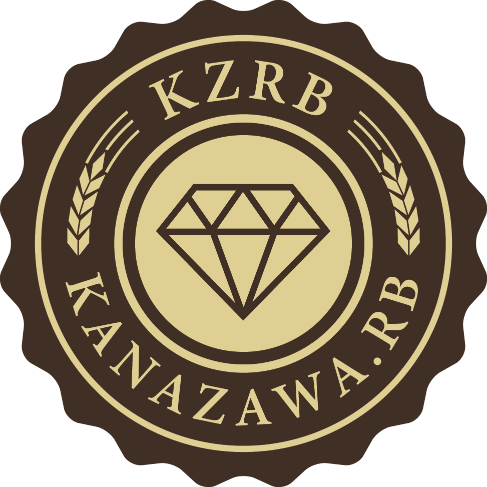
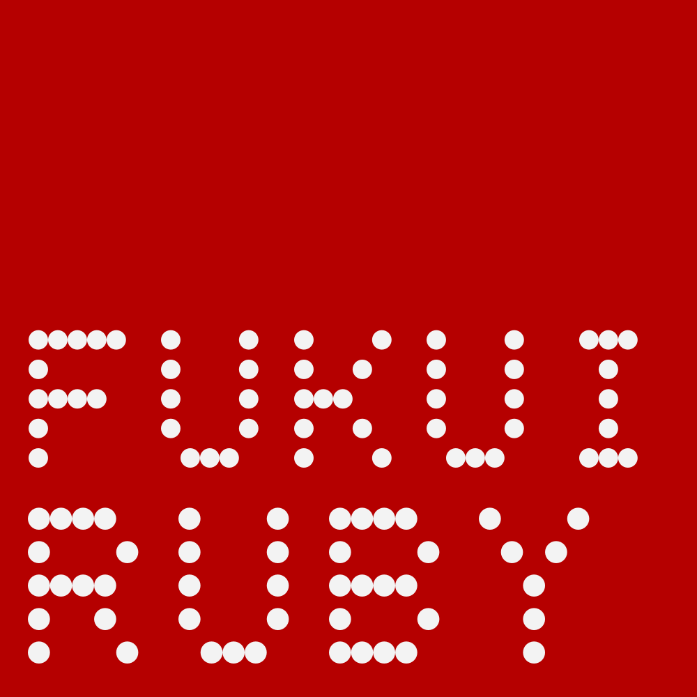

2026年11月14日(土)13:00 - 16:30
福井県立恐竜博物館 研修室
無料事前登録制 (準備中)
SNSハッシュタグ#hokurikurk02
北陸三県で活動する三つのRubyコミュニティが合同で主催・運営を行っています。 ※都道府県コード順
富山: Toyama.rb

石川: Kanazawa.rb

福井: fukui.rb
背景画像: Totti / ウィキメディア・コモンズ / CC BY-SA 4.0